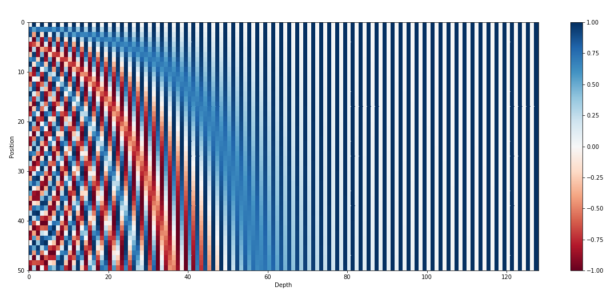
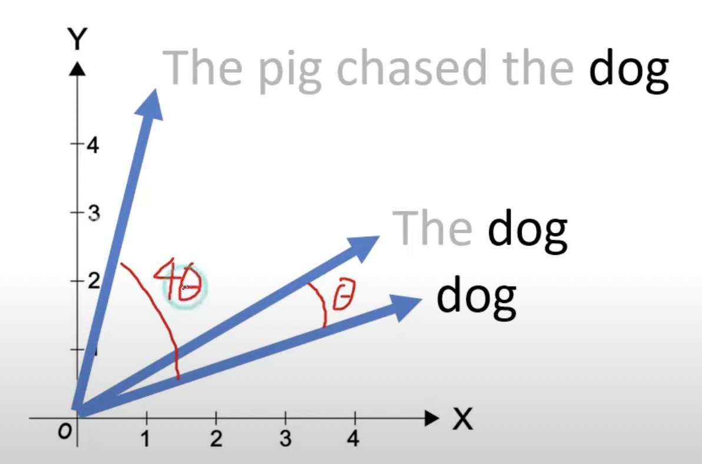
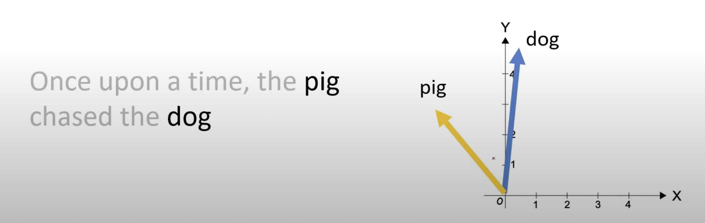

- RoPE overcomes limitations of its 2 precursors: Absolute and Relative Positional Embedding
- It takes the best-of-both-worlds approach
- Encodes absolute positions using rotation matrix
- Incorporates relative positions into the attention matrix
- Offers 3 benefits:
- Flexibly adapts to work for any sequence length
- Decays the inter-token dependency as relative distance increases
- Equips linear self-attention with relative position encoding
Absolute Positional Embedding
- Input embeddings fed to transformer only convey meaning of token in isolation
- We want model to treat nearby words as nearby and distant words as distant
- Important because self-attention is position invariant
- Represent the above in a manner that model can understand
\[EncoderInput[i]= Embedding[i] + PositionalEmbedding[i]\]
üìù Formulation
\[f_{t: t \in\{q, k, v\}}(\boldsymbol{x}_i, i):= \\ \boldsymbol{W}_{t: t \in\{q, k, v\}}(\boldsymbol{x}_i, \boldsymbol{p_i})\]
\[\begin{cases} \\ \mathbf{p}_{i, 2t} = \sin \left( k/{10000^{2t/d}} \right) \\ \mathbf{p}_{i, 2t+1} = \cos \left( k/{10000^{2t/d}} \right) \end{cases}\]
- PE values are only computed once and reused for every sentence during both training and inference
- All we have to do is add these PE values with input embeddings, which change for every sentence
üñºÔ∏è Visual Intuition of Why it Works

- Each row is a relative position embedding (there are 50 token positions here)
- Closer positions have visually similar encodings than farther ones
üü° Limitations
- Sequence Length Bottleneck: We cannot represent PE values (and thereby, distance) beyond the sequence length we set (128 in the above diagram)
- Lack of Relative Positions: PE values are computed independently, hence, model treats pos 1 vs pos 2 the same way as pos 2 vs pos 100
Relative Positional Embedding (T5 model)
- Instead of representing a token’s position, represent a distance offset between 2 tokens using trainable parameters
- (e.g.) \(b_2\) represents distance offset of 2
| \(Anthony\) | \(Hopkins\) | \(admired\) | |
|---|---|---|---|
| \(Anthony\) | \(b_0\) | \(b_1\) | \(b_2\) |
| \(Hopkins\) | \(b_{-1}\) | \(b_0\) | \(b_1\) |
| \(admired\) | \(b_{-2}\) | \(b_{-1}\) | \(b_0\) |
- Token pairs that are same distance apart have same offset value
- This offset matrix (called bias) is added to attention matrix to encode positions
\[Final Attention Matrix = Attention Matrix + Offset Matrix\]
üìù Formulation
Formulation for Absolute Position Embedding:
\[f_{t : t \in \{q, k, v\}} \left( \mathbf{x}_i, i \right) := \\ \mathbf{W}_{t : t \in \{q, k, v\}} \left( \mathbf{x}_i + \mathbf{p}_i \right)\]
Formulation expected for Relative Position Embedding:
\[\begin{aligned} f_q (\mathbf{x}_m) & := \mathbf{W}_q \mathbf{x}_m \\ f_k (\mathbf{x}_n, n) & := \mathbf{W}_k (\mathbf{x}_n + \tilde{\mathbf{p}}_r^k) \\ f_v (\mathbf{x}_n, n) & := \mathbf{W}_v (\mathbf{x}_n + \tilde{\mathbf{p}}_r^v) \end{aligned} \]
- \(\tilde{p}^k_r\) and \(\tilde{p}^v_r\) are trainable relative position embeddings
- \(r = clip(m − n, rmin, rmax)\) , is clipped due to hypothesis that precise relative position is not useful beyond a certain distance
- After a few steps, below is the form we arrive for relative position embeddings:
\[q_m^T k_n = x_m^T W_q^T W_k x_n + x_m^T W_q^T \tilde{W}_k \tilde{p}_{m-n} + \\ \mathrm{u}^T W_q^T W_k x_n + \mathrm{v}^T W_q^T \tilde{W}_k \tilde{p}_{m-n}\]
- But, later works have simplified the form ü§ó
- For instance, Colin Raffel et al. “Exploring the limits of transfer learning with a unified text-to-text transformer” use:
\[q_m^T k_n = x_m^T W_q^T W_k x_n + b_{i,j}\]
- This form is similar to the one discussed for T5 model
üü° Limitations
- Re-computation of Attention Matrix: Due to this, as sequence length increases, inference speed decreases
- Issues with KV Cache: For every new token added to sequence, embeddings for all tokens will change, effectively rendering KV Cache impractical
| \(Anthony\) | \(Hopkins\) | \(admired\) | \(Michael\) | |
|---|---|---|---|---|
| \(Anthony\) | \(b_0\) | \(b_1\) | \(b_2\) | \(b_3\) |
| \(Hopkins\) | \(b_{-1}\) | \(b_0\) | \(b_1\) | \(b_2\) |
| \(admired\) | \(b_{-2}\) | \(b_{-1}\) | \(b_0\) | \(b_1\) |
| \(Michael\) | \(b_{-3}\) | \(b_{-2}\) | \(b_{-1}\) | \(b_0\) |
üßµ Enter Rotational Positional Embedding üßµ
- Instead of adding position embeddings to token embeddings, rotate the token embeddings based on its position in the sequence
- This solves the limitations of its precursors
- ✅ Solves the issue with KV Cache

- ✅ Notion of relative distance is preserved across rotations

üìù Formulation
- Remember:
\[q_m = f_q(x_m, m)\]
\[k_n = f_k(x_n, n)\]
\[v_n = f_v(x_n, n)\]
\[a_{m,n} = \frac{\exp(\frac{q_m^\top k_n}{\sqrt{d}})}{\sum_{j=1}^N \exp(\frac{q_m^\top k_j}{\sqrt{d}})}\]
\[o_m = \sum_{n=1}^N a_{m,n}v_n\]
- In Absolute Positional Embedding method, \(q^T_m\) and \(k_n\) each encoded individual token positions
- Hence, self-attention, (aka \(q^T_mk_n\)) led to propagation of information about individual token positions
- We want to move away from that and only incorporate relative position information during the self-attention operation
- In my understanding, it is because the absolute position is already encoded in the rotation
- In other words, we want the below to happen
- \(q_m = f_q(x_m, m)\)
- \(k_n = f_k(x_n, n)\)
- \(\langle \cdot, \cdot \rangle\) denotes inner-product
\[q^T_m k_n = \langle f_q(x_m, m), f_k(x_n, n) \rangle = g(x_m, x_n, m - n)\]
- Note that \(g(\cdot)\) does not have any individual position information like \(g(\cdot, m, n)\)
Solution for 2D Case
- The authors prove that, for the case of 2D vectors, the solution to the above problem is:
\[f_q(\mathbf{x}_m, m) = (\mathbf{W}_q \mathbf{x}_m) e^{im\theta}\]
\[f_k(\mathbf{x}_n, n) = (\mathbf{W}_k \mathbf{x}_n) e^{in\theta}\]
\[g(\mathbf{x}_m, \mathbf{x}_n, m - n) = \text{Re}[(\mathbf{W}_q \mathbf{x}_m)(\mathbf{W}_k \mathbf{x}_n)^* e^{i(m-n)\theta}]\]
\[f_{\{q,k\}}(x_m, m) = \begin{pmatrix} \cos m\theta & -\sin m\theta \\ \sin m\theta & \cos m\theta \end{pmatrix} \begin{pmatrix} W_{\{q,k\}}^{(11)} & W_{\{q,k\}}^{(12)} \\ W_{\{q,k\}}^{(21)} & W_{\{q,k\}}^{(22)} \end{pmatrix} \begin{pmatrix} x_m^{(1)} \\ x_m^{(2)} \end{pmatrix}\]
- Notice how first, the Key and Query are generated before rotation
Solution for General Case
- For any \(d\) dimensional input embedding, we assume \(d\) is even and divide the embedding space into \(d/2\) subspaces
\[f_{\{q,k\}}(\textbf{x}_m, m) = \textbf{R}_{\Theta,m}^d \textbf{W}_{\{q,k\}} \textbf{x}_m\]
\[ \begin{equation} R_{\Theta,m}^d = \begin{pmatrix} \cos m\theta_1 & -\sin m\theta_1 & 0 & 0 & \cdots & 0 & 0 \\ \sin m\theta_1 & \cos m\theta_1 & 0 & 0 & \cdots & 0 & 0 \\ 0 & 0 & \cos m\theta_2 & -\sin m\theta_2 & \cdots & 0 & 0 \\ 0 & 0 & \sin m\theta_2 & \cos m\theta_2 & \cdots & 0 & 0 \\ \vdots & \vdots & \vdots & \vdots & \ddots & \vdots & \vdots \\ 0 & 0 & 0 & 0 & \cdots & \cos m\theta_{d/2} & -\sin m\theta_{d/2} \\ 0 & 0 & 0 & 0 & \cdots & \sin m\theta_{d/2} & \cos m\theta_{d/2} \end{pmatrix} \end{equation} \]
- This leads us to the general form of self-attention using RoPE
\[\begin{equation} \textbf{q}_m^\top \textbf{k}_n = (\textbf{R}_{\Theta,m}^d \textbf{W}_q \textbf{x}_m)^\top (\textbf{R}_{\Theta,n}^d \textbf{W}_k \textbf{x}_n) = \textbf{x}_m^\top \textbf{W}_q^\top \textbf{R}_{\Theta,n-m}^d \textbf{W}_k \textbf{x}_n \end{equation}\]
- Notice how RoPE incorporates relative position information in the self-attention step itself instead of adding it through a bias matrix like its precursor
üçÄ Properties of RoPE
Flexibly adapts to any sequence length
- For any new token, all we need to do is rotate its vector by \(m\theta\)
- The method is scalable and requires no pre-computation
Decay of the inter-token dependency
- Set \(\theta_i = 1000^{-2i/d}\) following original transformers paper
- This causes inner-product to decay as relative position increases
- Relative upper bound is the \(\textbf{R}_{\Theta,n-m}^d\) term in general form of RoPE: \(\textbf{x}_m^\top \textbf{W}_q^\top \textbf{R}_{\Theta,n-m}^d \textbf{W}_k \textbf{x}_n\)
Equips linear self-attention with relative position encoding
- Instead of expressing self-attention in the usual way as:
\[ \begin{equation} \text{Attention}(\textbf{Q}, \textbf{K}, \textbf{V})_m = \frac{\sum_{n=1}^N \text{sim}(\textbf{q}_m, \textbf{k}_n) \textbf{v}_n}{\sum_{n=1}^N \text{sim}(\textbf{q}_m, \textbf{k}_n)} \end{equation} \]
- Linear-attention expresses it as:
\[ \begin{equation} \text{Attention}(\textbf{Q}, \textbf{K}, \textbf{V})_m = \frac{\sum_{n=1}^N \phi(\textbf{q}_m)^\top \phi(\textbf{k}_n) \textbf{v}_n}{\sum_{n=1}^N \phi(\textbf{q}_m)^\top \phi(\textbf{k}_n)} \end{equation} \]
- The authors propose that RoPE can be combined with linear-attention simply by multiplying the rotation matrices
\[ \begin{equation} \text{Attention}(\textbf{Q}, \textbf{K}, \textbf{V})_m = \frac{\sum_{n=1}^N (\textbf{R}_{\Theta,m}^d \phi(\textbf{q}_m))^\top (\textbf{R}_{\Theta,n}^d \phi(\textbf{k}_n)) \textbf{v}_n}{\sum_{n=1}^N \phi(\textbf{q}_m)^\top \phi(\textbf{k}_n)} \end{equation} \]
Results
1. Machine Translation: WMT 2014 English -German Translation
- Evaluate English-to-German translation
2. Pre-training Language Modeling
- Validate performance in learning contextual representations
- Pre-training dataset: BookCorpus and Wikipedia Corpus Foundation
3. Performer + RoPE for Pre-Training
- Performer uses linear-attention
4. Fine-tuning on GLUE tasks
- GLUE (General Language Understanding Evaluation): Benchmark for evaluating performance of natural language understanding (NLU) models across a diverse set of tasks
5. Handling long texts on Chinese Datasets
- Performance improves as sequence length increases
üü° Limitations of RoPE
- Unclear why RoPE converges faster than other strategies
- Superior performance on long texts cannot be explained convincingly
- Attributed to long-term decay, but other strategies have this property as well
üìã References
- Jianlin Su, et al., RoFormer: Enhanced Transformer with Rotary Position Embedding
- Umar Jamil, Attention is all you need (Transformer)
- Amirhossein Kazemnejad, Transformer Architecture: The Positional Encoding
- Efficient NLP, Rotary Positional Embeddings: Combining Absolute and Relative